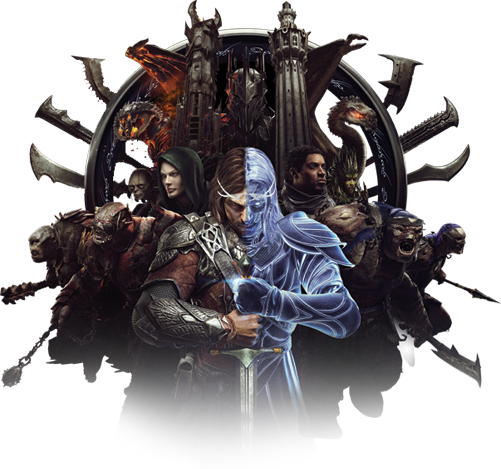
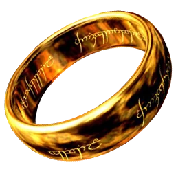
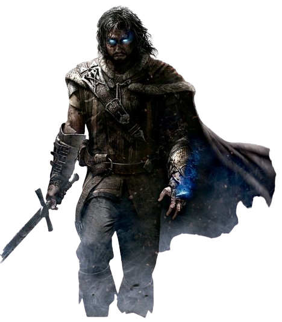
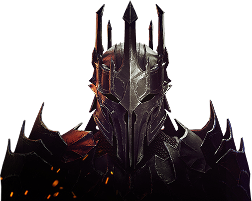
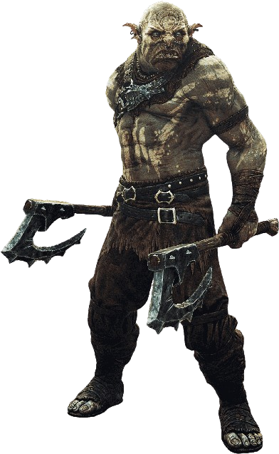
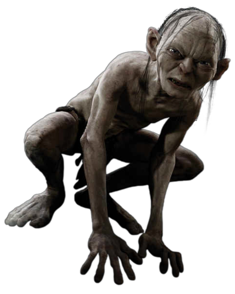

O Anel
Foi criado pelo Senhor do Escuro Sauron no fogo
da Montanha da
Perdição.

Talion
foi criado em Minas Tirith, uma região perto do reino de Gondor.

Sauron
Ele é o criador do objeto mais poderoso da terra-média, O "Um Anel".

Orc
Seu sangue é negro e azedo, remanescências de corpos ressuscitados.

Gollum
Sua vida e sua existência são como o anel que tanto almeja, fria e sombria.